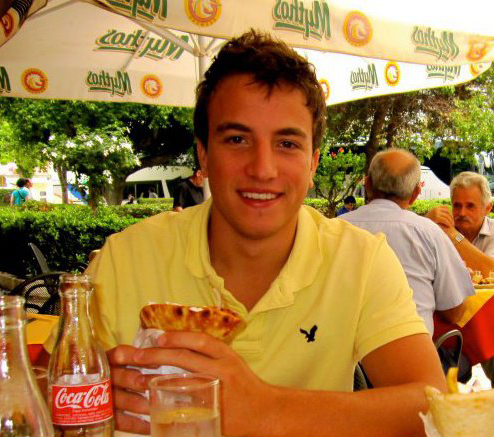

Jean-Pierre Bhavnani, CTO
"Adam embraced his role at Fongo very quickly and began contributing immediately. His ideas and concepts were consistently well thought through, unique and creative.
Adam paid particular attention to detail when crafting UI designs and always considered the product from an end-user's perspective. Adam is extremely easy to work with and would be an excellent addition to any team."

Joe Preiditsch, Chief Architect
"Adam's role as a product specialist quickly grew during this tenure at Fongo to include more of a product management and project management role. He exceled with respect to managing the features and the scope of them during the release. He always thought of new and innovative ways to increase our Mobile Calling App's appeal, and worked real well with the Development Team.
I firmly believe that he would be a great asset in any team and would surely contribute many great ideas while exceeding expectations for his role"
John Astorino, VP Product Management
"Adam is a pleasure to work with and to manage. He very quickly demonstrated his aptitude for Product Management and his passion and talent for UI design.
He his very creative, organized and a natural leader. Adam was a great asset to Fongo and will be a great asset to any organization in his future."